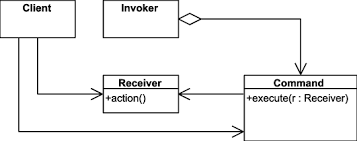

Patrón Command

El patrón Command es un patrón de diseño de comportamiento que encapsula una solicitud como un objeto, permitiendo parametrizar clientes con diferentes solicitudes, encolar o registrar solicitudes y soportar operaciones de deshacer.
¿Qué problema resuelve?
Permite desacoplar el objeto que envía la solicitud del que la recibe, encapsulando la acción a ejecutar como un objeto que puede ser manipulado.
Casos de uso
- Menús en interfaces gráficas (cada opción es un comando)
- Sistemas que requieran historial de acciones o deshacer
- Automatización y procesamiento encolado de tareas
Ventajas
- Desacopla remitente y receptor
- Permite reutilización y manipulación flexible de comandos
- Facilita la implementación de operaciones deshacer/rehacer
Ejemplo en Java
// Comando
interface Comando {
void ejecutar();
}
// Receptor
class Luz {
public void encender() {
System.out.println("Luz encendida");
}
}
// Comando concreto
class EncenderLuz implements Comando {
private Luz luz;
public EncenderLuz(Luz luz) { this.luz = luz; }
public void ejecutar() { luz.encender(); }
}
// Invocador
class Interruptor {
private Comando comando;
public Interruptor(Comando comando) { this.comando = comando; }
public void presionar() { comando.ejecutar(); }
}